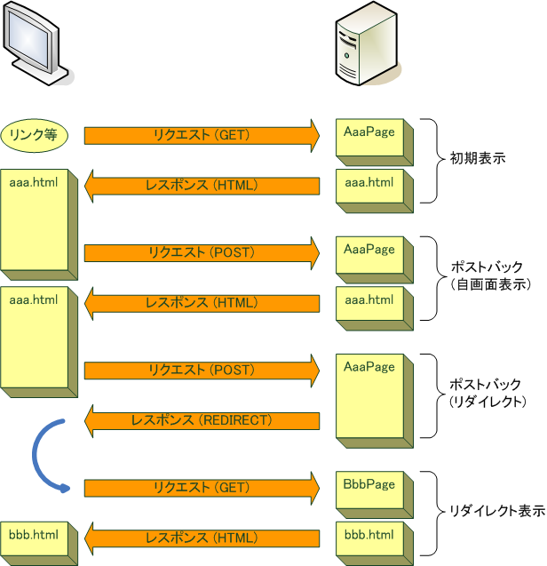

概要
Teeda Extensionは， ブラウザからのリクエストに応じてページクラスのメソッドを呼び出します． このメソッドをライフサイクルメソッドと呼びます．
ライフサイクルメソッドには次のものがあります．
initialize()do～()prerender()
ライフサイクルメソッド
initializeメソッド
initialize()
メソッドは， 画面が最初に表示されるときや， 他の画面から遷移 (REDIRECT)
してきたときに呼び出されるメソッドです．
initialize()
メソッドは次の規約に従います．
- 可視性
public- メソッド名
initialize- 引数
- なし
- 戻り値型
Class，Stringまたはvoidのいずれか
public Class initialize() {
...
}
initialize()
メソッドは，
ポストバック
では呼び出されません．
do～()メソッド
do～()
メソッドは， フォームがサブミットされた場合 (
ポストバック
) に呼び出されるメソッドです．
do～()
メソッドは次の規約に従います．
- 可視性
public- メソッド名
doで始まる- 引数
- なし
- 戻り値型
Class，Stringまたはvoidのいずれか
public Class doUpdate() {
...
}
do～()
メソッドは， サブミットボタンに対応付けられ， 対応するボタンが押された場合のみ呼び出されます (
詳細
)．
<input type="submit" id="doUpdate" value="更新" />
do～()
メソッドは， ポストバックでない場合や， バリデーションでエラーがあった場合は呼び出されません．
リクエストパターン
Teeda Extensionでは， ブラウザから受け取ったリクエストの基本的な処理パターンが4つあります．
- 初期表示
- ブックマークやリンクがクリックされたことによるリクエストです．
- ポストバック (自画面表示)
- 表示している画面のフォームがサブミットされたことによるリクエストです． 画面遷移せずに同じ画面を表示します．
- ポストバック (リダイレクト)
- 表示している画面のフォームがサブミットされたことによるリクエストです． do～()メソッドの戻り値で指定された画面に遷移 (リダイレクト) します．
- リダイレクト表示
- リダイレクトによるリクエストです．
リクエストパターンとライフサイクルメソッド
リクエストパターン ごとに， どのライフサイクルメソッドが呼び出されるかを説明します．
ポストバック (自画面表示)
ポストバック (自画面表示) では，
do～()
メソッドおよび
prerender()
メソッドが呼び出されます．
バリデーションでエラーがあった場合は
prerender()
メソッドだけが呼び出されます．
ポストバック (リダイレクト)
ポストバック (リダイレクト) では，
do～()
メソッドのみが呼び出されます．
do～()
メソッドの戻り値で指定された画面へリダイレクトします．
バリデーションでエラーがあった場合は ポストバック(自画面表示) になります．
画面遷移
ライフサイクルメソッドは，戻り値型を
Class
または
String
型にすることができます (間違いにくさやリファクタリングのしやすさから
Class
型を推奨します)．
public class FooPage {
...
public Class doSubmit() {
...
return NextPage.class;
}
}
次画面のページクラスまたはそのコンポーネント名を戻り値とすることで， その画面に遷移 (リダイレクト) します．
戻り値が
null
だと画面遷移 (リダイレクト) しないで直接自画面を表示します．
戻り値をそのページクラス自身 (またはそのコンポーネント名) にすると， リダイレクトして同じページを表示します． この場合は遷移先が現在の画面と同じというだけで， 画面遷移として扱われます．
public class FooPage {
...
public Class doSubmit() {
...
return FooPage.class;
}
}
画面遷移 (リダイレクト) しない場合は戻り値の型を
void
にすることもできます．
public class FooPage {
...
public void initialize() {
...
}
}